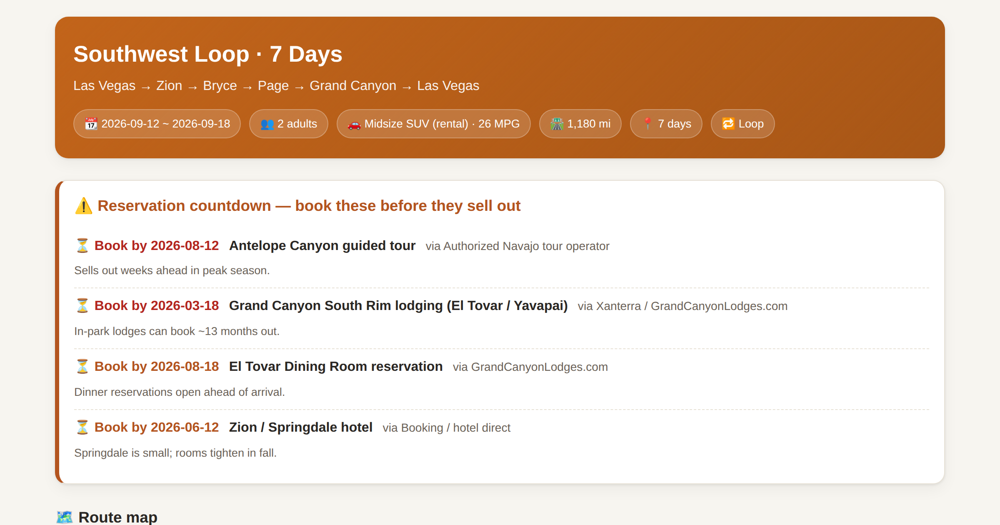
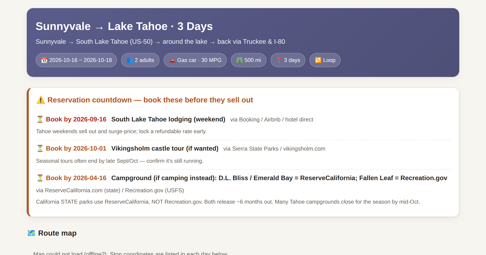
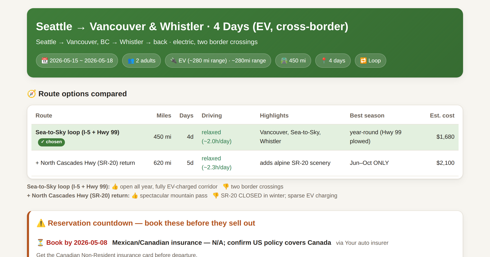

Sample itineraries
Real, generated trips — open one on your phone, every stop has one-tap Google/Apple Maps links.

7-Day Southwest National Parks Road Trip Itinerary (Las Vegas Loop)
A relaxed week-long loop out of Las Vegas hitting four of the Southwest's headline parks. Paced so no day is a slog, with the must-book-early reservations (Antelope Canyon tour, Grand Canyon South Rim lodging) called out as a dated countdown.
View the itinerary →
3-Day Lake Tahoe Road Trip from the Bay Area (Sunnyvale Loop)
A long-weekend escape from the Bay Area to South Lake Tahoe and back. Short driving days, ReserveCalifornia booking windows, and an honest read on Sierra snow and chain-control season.
View the itinerary →
4-Day Seattle to Vancouver & Whistler EV Road Trip (Cross-Border)
A four-day electric loop from Seattle up to Vancouver and the Sea-to-Sky highway to Whistler. Includes a per-leg charging corridor with state-of-charge planning and a two-crossing border checklist (US insurance is valid in Canada — but not Mexico).
View the itinerary →Why it’s different from a generic AI itinerary
🛣️ Daily driving segmentation
The route is sliced into days under a sane drive limit, with overnight towns and “arrive before dark / no closed gate” checks — not just a wishlist of stops.
⏳ Reservation countdown
Exact “book by” dates on the right system (Recreation.gov, ReserveCalifornia, Parks Canada): campgrounds ~6 months out, in-park lodges up to ~13 months.
⚡ Fuel & EV charging
Long empty-stretch warnings for gas; a per-leg charging corridor with state-of-charge and a winter-range derate for EVs.
❄️ Season & closures
Closure-aware: winter passes (Going-to-the-Sun, Tioga, Trail Ridge), wildfire and snow — it down-ranks or reroutes and says so.
🛂 Borders & timezones
Timezone-corrected arrivals and a US↔Canada↔Mexico documents / insurance / wait checklist.
📊 Reliability-graded budget
Every figure tagged verified / reference / estimate, so you know what to double-check before you leave.
Get started in two commands
Install it into Claude Code as a plugin — no API key required:
/plugin marketplace add Waybox-AI/roadtrip-skill
/plugin install roadtrip-navigator@roadtrip-skillThen just ask in plain language: “Plan a 7-day Southwest national parks road trip from Las Vegas for 2 adults in September, gas SUV, loop.”